괴테, 영국 해군, 그리고 "Listening for the weather"
게시: 2019-01-31T06:30:00+09:00
시간에 종속된 존재인 주제에, 인간은 항상 미래를 예측하려고 합니다. 우리가 역사를 공부하는 이유도, 과거를 돌이켜 봄으로써 미래의 일을 조금이라도 예측하기 위한 것이라고 생각합니다. 미래를 예측할 수만 있다면, 당장 해볼 수 있는 것이 여러가지 있겠지요. 로또를 사도 되고, 선물시장에서 큰 대박을 터뜨릴 수도 있고, 교통사고나 범죄를 미리 막아 소중한 생명들을 구할 수도 있습니다. 결국 당장 하고 싶은 것을 생각나는 대로 몇개 늘어놓고 보니 돈과 생명에 관계된 것들이네요.
미래를 예측하려는 실제적인 노력이 동서고금을 막론하고 실제로 많이 있었고, 또 현재 진행형으로 진행되고 있습니다. 그중에서도 가장 오래된 노력이었고, 또 재산과 인명에 직접 영향이 있고, 지금도 국가적으로 많은 돈과 인력을 퍼붓지만 그다지 신통치 못한 예측을 내는 예언이 있습니다. 바로 일기 예보입니다.
(뉴질랜드 출신의 Bic Runga라는 가수가 직접 지은 'Listening for the weather'라는 노래의 가사는 이렇게 시작됩니다.
So I'm listening for the weather to predict the coming day
Leave all thought of expectation to the weather man
No it doesn't really matter what it is he has to say
'Cause tomorrows keep on blowing in from somewhere
정말 아름다운 가사 아닌가요 ? 멜로디도 좋고, 무엇보다 저 말레이-중국-마오리 혼혈 가수의 목소리가 정말 매혹적입니다.

전체곡 감상은 https://youtu.be/xEM7v-dh1gE 에서 하세요.)
중국이나 이집트나 고대의 달력 제작자들은 천문을 보고 계절의 변화 패턴을 꽤 정확히 측정해서 달력으로 만들어냈습니다. 지구의 공전과 자전에 따른 천체의 운동은 사실 범우주적인 질서에 의한 것이기 때문에, 그런 계절 변화는 고대에도 상당히 정확한 측정이 가능했던 것이지요, 그렇게 계절의 변화를 정확히 측정하려는 주된 목적은 농업 생산의 극대화를 위한 것이었습니다. 특히 이집트의 경우 계절의 변화가 나일강의 범람과 직접적인 관계가 있었으니까 더욱 중요했겠지요.
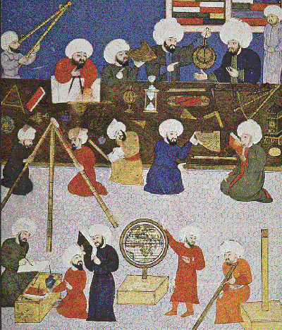
(천문학에는 동서양과 종교에 상관없이 모두들 열심히였습니다.)
계절의 변화에 비해 날씨의 변화는 농업에 직접적인 영향을 주지도 못했고 (내일 폭풍이 분다고 해서 농사 짓던 거 뽑아서 옮길 수도 없으니까요) 무엇보다도 정확한 예측은 사실상 불가능했습니다. 고고한 별들의 움직임이 아니라, 불안정한 대기 현상이 만들어내는 이런저런 징후를 보고 맞춰야 했으니까요. 따라서 달력 만드는 분들은 고대부터 상당히 높은 지위에 있었지만, 날씨는 주로 나이든 목동들이나 어부들, 혹은 신경통이 있는 노인들이 경험으로 맞춰야 했습니다.
일기예보가 농부들에게는 그저그런 중요성만을 지녔다면, 어부나 선원들에게는 정말 생사를 판가름짓는 중요성을 지녔습니다. 바다에서, 더군다나 거친 바다에서 인간은 한낱 티끌에 불과하거든요. 정확한 일기예보가 가능하다면, 폭풍이 예상될 때 출어를 하지 않으면 되니까 많은 어부들의 생명을 구할 수 있고, 이미 대양을 항해 중인 상선의 경우 폭풍이 예상되는 해역을 피해서 돌아갈 수도 있겠지요.
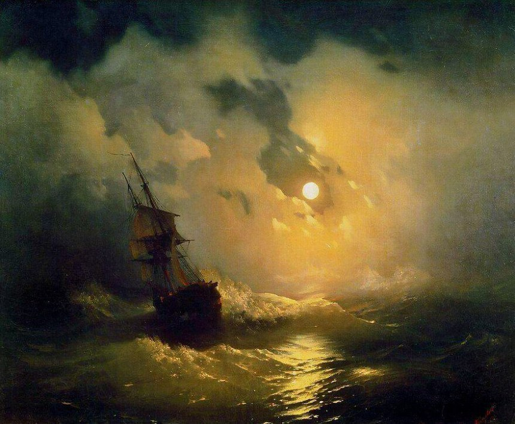
(보기에는 멋있어 보일지 몰라도, 자기가 직접 저 배위에 올라탔을 경우엔 그렇게 멋있게만 느껴지지는 않습니다.)
이렇게 생사 및 많은 돈이 걸린 문제였기 때문에, 일기예보를 위한 과학적인 노력은 컴퓨터나 인공위성 발명 전부터 계속되어 왔습니다. 나폴레옹 시절 당시 가장 그럴 듯한 방법은 다름 아닌 압력계를 이용하는 것이었습니다.
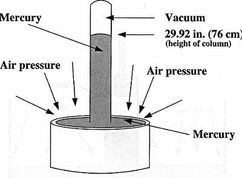
(이 그림 다들 기억하시지요 ?)
우리가 중학교에서인가 초등학교에서인가 배웠던 것 중에 토리첼리의 수은 기압계가 있지요. 이 수은 기압계는 토리첼리가 17세기 중반에 기압 연구가 아니라 원래 '진공 상태'의 생성을 위해 고안한 것이었습니다. 그 실험 와중에, 토리첼리가 수은 기둥의 높이가 날마다 조금씩 달라진다는 것을 알게 되고, 그것이 기압과 상관있다는 것을 알게 되면서 기압계로 사용되게 된 것이지요.
기압과 날씨와의 상관 관계에 대해 누가 정립을 했는지는 명확치 않습니다만, 사람들은 고기압이면 날씨가 좋아지고, 저기압이면 날씨가 나빠진다는 것을 알게 되었습니다. 그 때문에, 일기예보도, 라디오도 없던 시절, 사람들은 작은 기압계를 가지고 날씨를 비교적 과학적으로 짐작할 수 있게 된 것이지요.
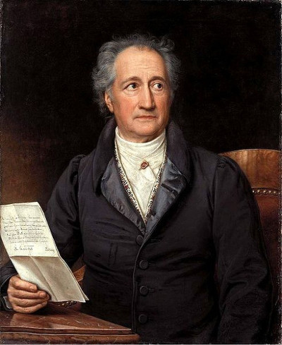
(괴테입니다. 최근에 케이블 TV에서 젊은 괴테가 '젊은 베르테르의 슬픔'을 쓰게 된 배경을 그린 독일 영화를 봤는데 정말 재미있더군요.)
이것을 널리 보급...이라기보다는, 독일 전역에 널리 알린 사람은 다름아닌 괴테였습니다. 괴테는 문필가, 화가, 과학자, 철학자 등 다양한 방면에서 활동한 천재였습니다만, 1820년대 초에는 기압 연구에 상당히 많은 노력을 기울이고 있었거든요. 그래서 아래 그림과 같은 작고 예쁜 유리 기압계가 '괴테 기압계' 또는 '괴테 장치'로 알려지게 되었습니다. (사실 이 장치를 만든 것은 괴테가 아닌, 무명씨라고 하네요.)
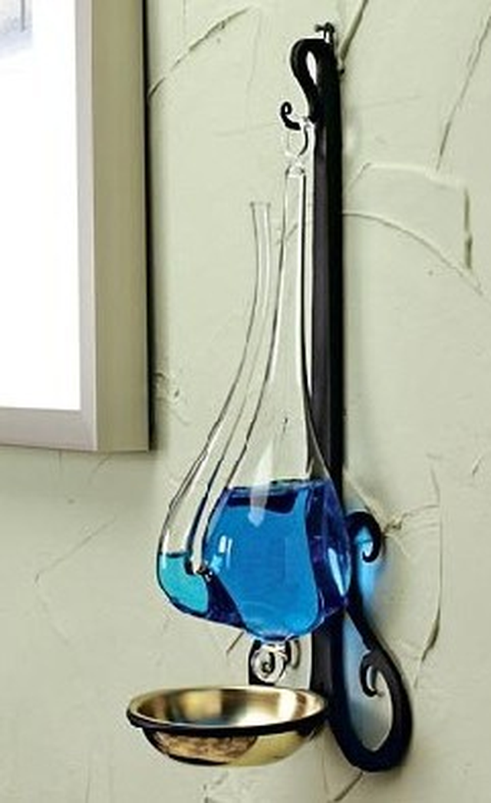
(와, 이쁜데요 ?)
이 기압계의 원리는 매우 단순합니다. 이렇게 색깔이 든 물을 집어 넣은 주전자 모양으로 생긴 유리병에서, 외부와 통하는 구멍은 좁은 주전자 부리 끝 뿐입니다. 주전자 몸체에 해당하는 큰 유리방의 위는 공기가 아니라 진공 상태입니다. 외부 기압이 높아지면 주전자 부리에 든 물이 압력을 받아 그 수위가 내려가고, 반대면 올라가지요.
이 기압계에는 보시다시피 눈금도 없고, 또 일정한 규격도 없기 때문에, 지금이 1기압 위인지 밑인지 알 방법은 없습니다. 사실 그것이 중요한 것은 아니었습니다. 즉, 날씨 예측에는 어느 순간의 기압 절대치가 중요한 것이 아니라, 기압이 높아지고 있는지 낮아지고 있는지, 그 변화량이 중요했거든요. 특히 그 변화 속도가 매우 중요했습니다. 만약 주전자 부리 속의 수위가 빠르게 올라가고 있다면, 기압이 신속하게 떨어지고 있다는 뜻이었고, 그는 곧 비나 폭풍을 뜻하는 것이었습니다.
나폴레옹 전쟁 당시의 영국 군함의 함장실에도 이런 형태의 기압계가 하나씩 달려 있는 경우가 많았습니다. 군함의 함장이야말로 그런 날씨 변화에 가장 민감해야 하는 사람이었으니까요.
요즘도 이런 액체를 이용한 가정용 기압계가 판매되고 있습니다. 토리첼리의 수은 기압계는 당연히 아니고요 (수은의 위험성 때문에 법으로 금지되었습니다). Amazon 같은 곳에서 weather glass를 검색하면 파는 곳이 종종 있습니다. 여러분도 그렇게 생각하셨는지 모르겠습니다만, 저 괴테 기압계, 또는 weather glass라고 불리는 물건은 실내 장식용으로도 꽤 괜찮거든요.
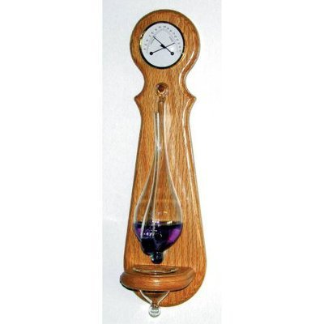
(이것이 현재 아마존에서 팔고 있는 weather glass 입니다. 52.5 달러에 팔고 있군요.)
하지만 이런 물이 든 유리 기압계는 건물 안이나 선박에서 사용하기엔 어떨런지 몰라도, 야외에서 활동하는 사람들이 휴대하기엔 너무 불편했습니다. 가령 야전에서 작전 중인 장교나 양떼를 모는 양치기에게는 깨지기 쉽고 물이 새나가기 쉬운 이런 기압계는 무용지물이었습니다.
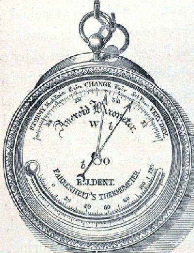
(이것이 초기의 아네로이드 기압계입니다. Aneroid라는 단어는 정말 처음 듣는 단어군요.)
그러다가 1843년, 루시앙 비디(Lucien Vidie )라는 프랑스 발명가가 내부가 진공 상태인 금속판의 변화와 스프링의 힘을 이용해서 기압을 눈금으로 나타내주는 장치, 즉 아네로이드 기압계(aneroid barometer)를 발명해냅니다. 이 아네로이드라는 말의 뜻은 '액체가 없다'는 뜻입니다. 특히 이 장치의 묘미는 그 눈금 바늘의 움직임을 일부러 뻑뻑하게 만들었다는 점입니다. 아까 말씀드렸듯이, 어느 순간의 절대 기압 수치보다는, 그 변화량이 날씨 변화에 중요했거든요. 그런데 매시간마다 이 기압계를 꺼내서 읽고 그 수치를 기록하는 것은 상당히 귀찮은 일이었습니다. 그래서, 이 기압계 바늘의 움직임을 일부러 좀 뻑뻑하게 만들었습니다. 그 결과, 실제로 변화가 있다고 하더라도, 바늘이 당장은 움직이 않다가, 기압계를 꺼내들고 탁탁 한번 치면 비로소 바늘이 움직여서, 그 바늘이 올라가는지 내려가는지 쉽게 볼 수 있게 해준 것입니다.
여러분들은 집집마다 온도계는 혹시 있을지 몰라도, 기압계는 없으실 겁니다. 하지만 19세기 중후반만 해도, 이 아네로이드 기압계는 미니 기상대로서의 역할을 톡톡히 했습니다.
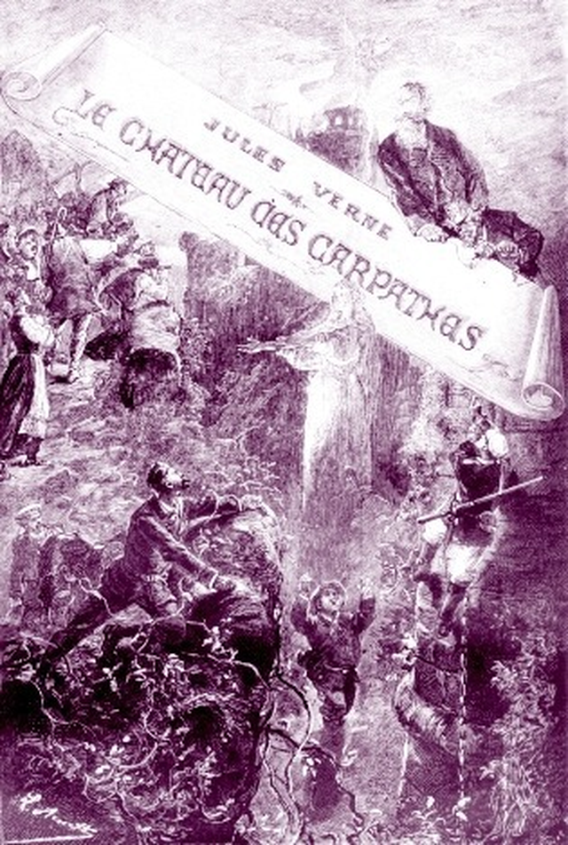
(쥘 베른느 소설 카르파티아 성. 내용은 그다지 재미있지는 않습니다...)
카르파티아 성 (Le Cahteau des Carpathes, 쥘 베른느 작, 배경 19세기 중반 루마니아의 트란실바니아 지방) ------------------
(트란실바니아의 어느 산골에서 양치기 노인과 유태인 행상이 만나 이야기를 나눕니다.)
"이거 말입니까 ?" 유태인은 두 손으로 온도계를 만지작거리면서 대답했다. "이건 날씨가 더운지 추운지 가르쳐주는 기계랍니다."
"흐음, 그거라면 나는 잘 알고 있지. 내가 홑옷만 입고도 땀을 흘리는지, 외투를 입어도 추운지를 보면 돼."
과학 문제에는 조금도 신경을 쓰지 않는 양치기에게는 물론 그것으로 충분할 터였다.
"그럼 바늘이 달린 이 시계는 ?" 그는 아네로이드 기압계를 가리켰다.
"그건 시계가 아니라 내일 비가 올지 날씨가 갤지를 가르쳐주는 도구랍니다."
"정말 ?"
"그럼요."
"그래 ? 하지만 그 값이 1 크로이처 밖에 안 된다 해도 나는 필요없어." 프리크가 대꾸했다.
------------------------------------------------------------------------
양치기 노인 프리크는 당연히 아네로이드 기압계가 필요없었습니다. 양치기로 잔뼈가 굵은 노인은 산등성이에 걸린 구름의 모습과 변화만 봐도 날씨를 짐작할 수 있을테니까요. 저 유태인 행상은 사람을 잘못 만난 거지요.
하지만 쥘 베른느(예, 80일간의 세계일주나 해저 2만리를 쓴 그 사람입니다)의 소설 속에서 나오듯이, 당시로서는 유럽의 시골 깡촌이었던 트란실바니아 촌구석까지 행상들이 시계, 온도계와 함께 기압계를 팔고 다닐 정도로, 당시로서는 꽤 인기 상품이었다고 합니다.
이렇게 보면 일기예보와 관련해서는 주로 이탈리아인이나 독일인, 프랑스인들이 많은 공헌을 한 것 같습니다만, 실제적으로 현대적인 의미에서 일기예보 비스무리한 것을 체계적으로 실시한 것은 영국이었습니다. 그리고 그 선구자적인 역할을 한 것은 역시 영국 해군이었습니다.
프랜시스 보퍼트(Francis Beaufort) 경이라는 분이 있었습니다. 이름에서 짐작하듯이 그 선조는 원래 프랑스에서 위그노 탄압 때 아일랜드로 이주한 사람이었습니다. 이 양반은 14살 때 동인도 회사의 상선에서 뱃일을 시작해서, 나폴레옹 전쟁 중에 영국 해군에 투신, 미드쉽맨을 거쳐 22살의 나이에 장교로 임관했습니다. 나폴레옹 전쟁 중에는 "영광의 6월 1일 전투"에 참전하기도 하고, 적 항구에 침투조를 이끌고 작은 보트를 타고 잠입해 들어가 적 군함을 탈취해 오다가 큰 부상을 입는 등, 실전 경험도 많았습니다.
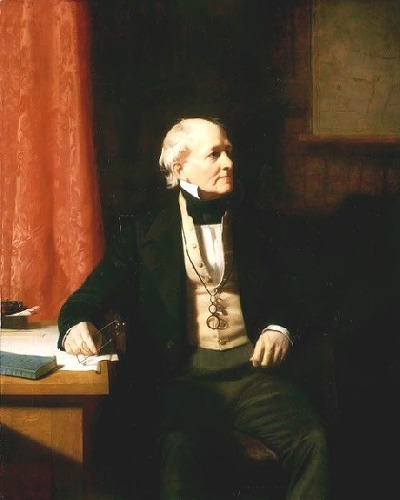
(이 온화해 보이는 신사가 한때 나폴레옹의 프랑스 해군과 혈투를 벌였던 보퍼트 경입니다.)
하지만 이 양반은 기본적으로 (정규 교육을 받은 것이 별로 없는데도 불구하고) 과학 기술에 정진했던 사람으로서, 해군 생활에서 가장 큰 업적은 남미 및 터키 등 여러 지역의 수로도/해도를 작성한 것이었습니다. 나중에는 왕립 학회, 왕립 천문학회, 왕립 지리학회의 위원직을 맡아 여러 과학자들의 후견인 역할도 수행했습니다. 노년에는 제독의 지위에도 오르고, (당시 영국 해군에서는 함장직에 오른 사람은 결국 일찍 죽지만 않는다면 결국엔 무조건 제독의 지위에까지 올랐습니다) 배쓰(Bath) 기사 작위도 받는 영예를 누립니다.
하지만 보퍼트 경의 이름이 오늘날까지 전해져오는 가장 큰 이유는 두가지입니다. 그 중 하나는 보퍼트 경이 바람의 세기를 표시하는 방법을 최초로 고안해서 널리 쓰이게 했다는 것입니다. 이름하여 보퍼트 풍력 계급 (Beaufort Wind Force Scale)입니다. 제 기억으로는 이거 중학교 때 배웠는데, 불행히도 학교 교과서에서는 보퍼트라는 이름까지는 언급하지 않았던 것으로 기억합니다.
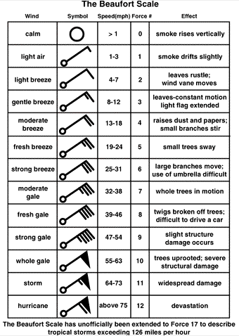
(이 음표 비슷하게 생긴 것으로 바람의 방향과 그 세기를 표시하게 되어 있습니다. 기억들 나시는지 ?)
보퍼트 경의 이름을 역사에 남게 한 두번째 이유는 바로 로버트 피츠로이(Robert FitzRoy)라는 후배를 양성해낸 것입니다. 이 피츠로이라는 사람도 영국 해군 장교였고 (보퍼트와는 달리 태생이 귀족이었습니다) 바로 찰스 다윈을 태우고 갈라파고스 제도로의 항해를 했던 비글(HMS Beagle) 호의 함장이었습니다. 불행히도 피츠로이 함장은 자기가 초청해서 함께 항해한 과학자인 찰스 다윈이 그런 '신성모독적인' 이론을 발표한 것에 대해 크게 침통해했다고 합니다.
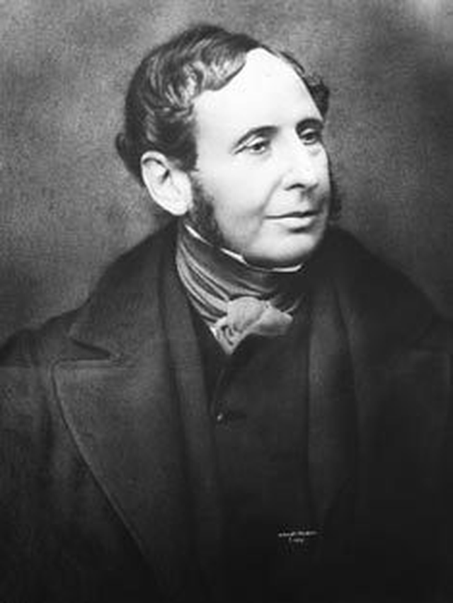
(이 따분하게 생긴 양반이 피츠로이입니다. 다윈은 이 사람이 가끔씩 불처럼 화를 내곤 했다, 간단히 말해서 성격이 좀 더러운 편이었다고 회고했습니다.)
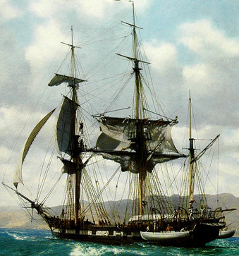
(사람 크기 보면 짐작 가시겠지만 비글호는 유명세에 비해 매우 작은 측량선에 불과했습니다.)
피츠로이의 이름이 유명해진 것은 비글 호의 함장이라는 점도 있지만, 이 사람이 일기예보의 기초를 닦았기 때문입니다. 이 삶은 보퍼트의 후원을 받아 1854년 통상 위원회의 기상 통계관(Meteorological Statist to the Board of Trade)이라는 새로운 부서에 임명되었는데, 이것이 현대 영국의 기상청이 됩니다. 특히 피츠로이는 비글 호의 항해 도중에 폭풍 기압계(storm glass)라는 독특한 기압계를 고안했다고 합니다. 이 기압계는 당시 영국의 여러 항구에 공식적으로 설치되어, 폭풍이 예상될 때는 어부들이 출어하지 못하도록 하여 많은 어부들의 목숨을 구했습니다.
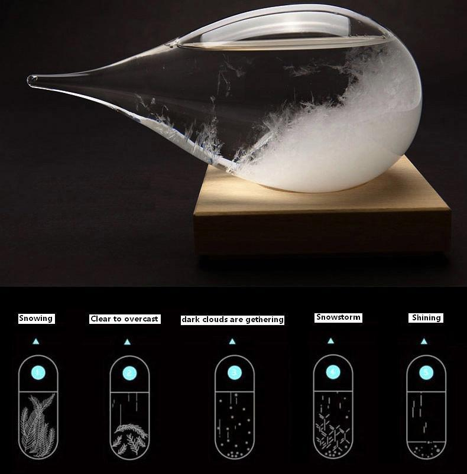
(이것이 피츠로이의 storm glass입니다만, 그 과학적 원리에 대해서는 좀 미심쩍은 부분이 많습니다. 일단 기압계라는 물건이 완전히 밀봉되어 있다는 것 자체가 좀 의심스럽지요 ?)
1859년 영국에 몰아닥친 끔찍한 폭풍의 피해를 겪은 후, 피츠로이는 날씨를 예측하는 것에 본격적으로 나서기 시작했습니다. 이렇게 날씨를 예측하는 것을 피츠로이는 "forecasting the weather"라고 불렀고, 이것이 일기예보(weather forecast)라는 말의 어원이 되었다고 하네요. 그는 19세기 중반에 발명된 전보를 통해, 영국 곳곳에 설치된 육상 관측소로부터 수집된 기상 정보를 받아 날씨를 예측하는 시스템을 만들었고, 그 결과 1860년 타임즈(The Times) 지에 최초로 일기예보가 발행되었습니다.
오늘날의 일기예보는 수퍼컴퓨터를 이용한 복잡한 수학적 모델링 계산을 거쳐 발표됩니다. 이런 수학적 모델에 의한 일기예보는 1922년에 루이스 리차드슨(Lewis Fry Richardson)이라는 영국 수학자가 최초로 고안되었으나, 당시에는 컴퓨터가 없었던 관계로 실천되지 못했고, 1955년 이후에야 가능해졌습니다. 하지만 집에 애들이 있다면, 괴테 기압계 같은 것 하나 정도 걸어놓는 것도 나쁘진 않을 것 같습니다. 애들에게 과학 공부도 시키고, 예쁘기도 하고, 무엇보다 (애쓰시는 기상청 직원분들에게는 미안하지만) 뉴스에 나오는 일기예보도 어차피 그다지 잘 맞지는 않는 것 같으니까요.